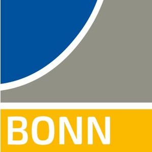
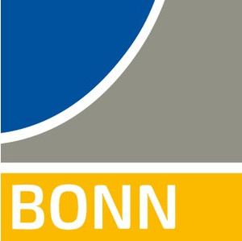
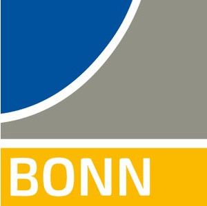

Bridging Sensing, Planning and Interaction
Participants are provided with a sparse map of an environment and a simulated robot equipped with a camera that can rotate independently of the mobile base. Given a set of robot waypoints, the objective is to orient the camera toward the most informative parts of the environment to improve localization accuracy.
Full challenge details are available at: github.com/rvp-group/actloc_benchmark. If you have any questions or encounter issues, please open an issue on the repository—this helps others as well.
There are two challenge tracks:
To ensure a fair comparison across all participants, we will evaluate your submissions on a commercial workstation with the following specifications: RTX 4090 (24 GB VRAM), 64 GB RAM. Please ensure that your method fits within these hardware constraints. Submissions that exceed these memory limits may be disqualified.
method folder. We will run submitted models on
the test sets and publish results on the website. A comment with your scores will be posted to your pull
request.The leaderboard will be published here as submissions are evaluated.
